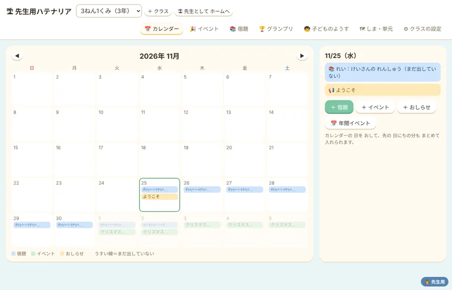
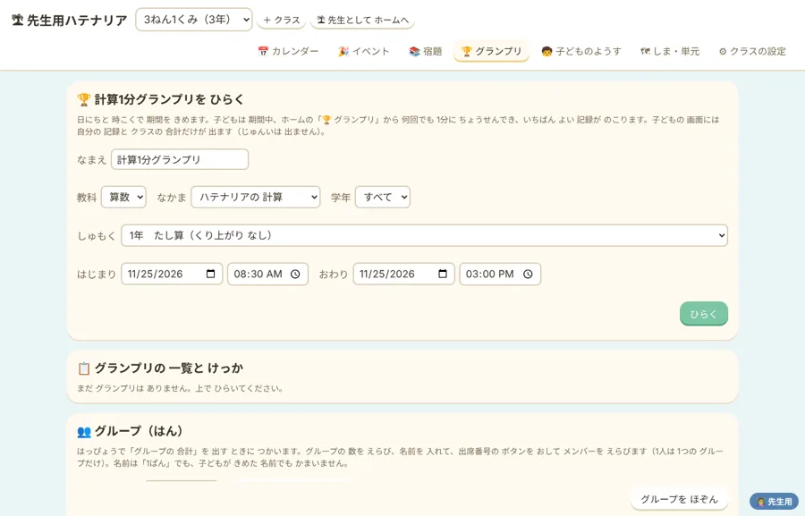

ハテナリアとは
ハテナリアは、小学生向けの全教科共通の学習アプリです。子どもは「じぶんの島（ホームアイランド）」を育てながら、気球で「さんすうの島」「りかの島」などに出かけて学習します。問題を解くとコインと教科ごとの素材がもらえ、それで建物を建てたり、部屋を飾ったり、服を着がえたりできます。

| 無料 | 有料サービスは使いません。アプリは GitHub Pages、先生側の記録は先生自身の Google スプレッドシートを使います。 |
|---|---|
| 実名不要 | 子どもは「出席番号」と「ニックネーム」と「あいことば（4けた）」だけで参加します。 |
| 先生が調整 | 宿題、開く島・単元、イベント、グランプリ、友達の島の使用などを、先生用ページで決められます。 |
| 学習が中心 | 素材は教科ごとに分かれていて、いろいろな教科を学ぶほど島づくりが進むしくみです。 |
しくみと安全
島・コイン・学習の記録は
端末のブラウザに保存
クラスの設定・宿題・イベントを渡す
学習の要約を受け取る
名簿（番号・ニックネーム）
学習の要約・宿題・グランプリ
- 先生のところに届くのは、出席番号・ニックネーム・学習の要約（いつ、どの単元を、何問解いたか など）だけです。
- 記録は先生の Google ドライブの中だけに残ります。開発者のサーバーには送られません。
- 参加用リンクとあいことばを知らないと、クラスには入れません。リンクが外に広まったときは「クラスの設定」でクラスコードを作り直せます。
- 「友達の島」は、先生が使うと決めたときだけ開きます。見るだけで、チャットはなく、気持ちは「すてき！」スタンプだけです（数や順位は出ません）。
- グランプリで子どもの画面に出るのは、自分の記録とクラスの合計だけです。順位は、先生が発表画面で見せるときだけ出ます。
⚠ 子どもの記録は端末のブラウザに保存されます。ブラウザの履歴やデータを消すと、島やコインが消えます。共用端末では注意してください。
はじめる準備（約20分）
先生の Google アカウント（学校のアカウントがおすすめ）で行います。
- スプレッドシートを用意する
新しい Google スプレッドシートを作り、［拡張機能］→［Apps Script］を開きます。配布されている「先生用GAS」のコードをすべて貼りつけて保存します。 - さいしょの準備
スプレッドシートを開き直すと、メニューに［ハテナリア］が出ます。［ハテナリア］→［さいしょの じゅんび］を押し、Google の確認画面で許可します。必要なシートが自動で作られます。 - 子ども用のウェブアプリを公開する
Apps Script で［デプロイ］→［新しいデプロイ］→ 種類「ウェブアプリ」。
実行するユーザー：自分、アクセスできるユーザー：全員 にしてデプロイします。出てきた…/execで終わる URL を控えます。 - 先生用ページを開く
［デプロイ］→［デプロイをテスト］に出る…/devで終わる URL をコピーし、スプレッドシートの［ハテナリア］→［先生用ページを ひらく］で貼りつけます。出てきたリンクから先生用ページを開き、ブックマークしておきます。 - クラスの設定
先生用ページの「⚙ クラスの設定」で、クラス名・学年・教科書を決め、「🔗 参加用リンク」の欄に手順3の…/execの URL を一度だけ貼りつけます。参加用リンクと QR コードができます。 - あいことばカードを作る
「🧒 子どものようす」→「🔑 あいことば」で、出席番号のいちばん大きい数を入れて［あいことばを つくる］→［🖨 カードを いんさつ］。切って一人ずつ配ります。 - 開く島・単元を決める
「🗺 しま・単元」で、子どもが入れる島と単元を選びます。習っていない単元は閉じておけます。
✅ 複数のクラスを持つときは、先生用ページ上の［＋ クラス］で増やします。コードの貼りつけやデプロイは最初の1回だけで、すべてのクラスを1つの先生用ページで扱えます。
最初の授業の例（45分）
| 5分 | ハテナリアの紹介。子ども用「あそびかた」を見せながら、島を育てる学習の世界であることを伝える。やくそく（あいことばはひみつ、本当の名前は入れない、時間を決める）を確認。 |
|---|---|
| 10分 | 参加用リンク（QR コード・クラスルームなど）を開き、冒険の書を作る → 学年 → 主人公 → 出席番号とあいことばでクラスに入る。 ※ 全員が同時に押すと少し待つことがあります。入れない子は、少しずらしてもう一度。 |
| 20分 | 気球で「さんすうの島」などへ行き、学習。もらったコインと素材で、島づくりを少し体験。 |
| 10分 | ふり返り。どの教科の素材が何に使えるかを話し合い、次回の学習の見通しをもつ。 |
💡 子ども用「あそびかた」は、タイトル画面の［📘 あそびかた］と、ゲーム中の［⚙ せってい］から開けます。
先生用ページの使い方

| 📅 カレンダー | 日にちを押して、宿題・イベント・お知らせを入れます。先の日にちの分もまとめて入れられます。 |
|---|---|
| 🎉 イベント | 年間イベント（こいのぼり、七夕、ハロウィン、クリスマスなど）の一覧と結果。［基本の 年間イベントを 入れる］で1年分がそろいます。目標は「1人あたりの数×人数」で自動で入り、手で直すこともできます。 |
| 📚 宿題 | 単元・コースの表から宿題を選び、期間を決めて出せます。 |
| 🏆 グランプリ | 計算1分グランプリなどを、日時を決めて開きます。結果の確認と、プロジェクター向けの「📣 はっぴょう」（個人・グループ・のびのびのベスト3／5）もここから。グループ（班）もここで作ります。 |
| 🧒 子どものようす | 宿題の進み具合、学習の記録、あいことばの作成・カードの印刷。 |
| 🗺 しま・単元 | 子どもが行ける島と単元を開け閉めします。 |
| ⚙ クラスの設定 | クラス名・学年・教科書、時間割、島づくりのきまり、学校の時間、理科クエスト連携、友達の島、参加用リンク、クラスの並び替え・はずす。 |

先生も遊ぶ
先生用ページ上の［🏝 先生として ホームへ］で、先生用の冒険の書（出席番号 0）でホームに入れます。先生の学習は成績やイベントの数には入りません。閉じている島にも入れるので、授業の前に確かめるのに使えます。
- 先生の島は1つです。左上の［👩🏫 先生（○年○組）▾］でクラスを切りかえると、イベント・宿題・お知らせ・学年だけが変わり、建物やコインは同じままです。
- 同じメニューの［👩🏫 先生用ページを ひらく］で、そのクラスの先生用ページを開けます。
- クラスを増やしたら、もう一度［先生として ホームへ］を押してください。
機能のコツ
宿題
宿題はホームの「学校」からすぐ解けます。島を歩く手間がないので、短い時間でも取り組めます。出すとごほうび（島で解いたのと同じ量）とガチャけんがもらえます。
年間イベント
クラスみんなで目標の問題数をめざします。達成するとクラス全員に季節の家具などが届きます。イベントひろばのモニュメントの上に、名前と進み具合が出ます。
グランプリ
期間中は何回でも挑戦でき、いちばんよい記録が残ります。発表では「のびのび（前の大会からの伸び）」も選べるので、いろいろな子に光が当たります。
友達の島
「⚙ クラスの設定」でオン・オフと、1日に見に行ける島の数を決めます。使い始める前に、見るときのマナー（やさしい気持ちで、わる口は言わない）を学級で確認しておくと安心です。
島づくりの時間
「島づくりのきまり」を「学校の時間はできない」にすると、平日の授業時間は島づくりが止まり、学習だけができます。
更新のしかた
ホームや各島（子どもの画面）は、更新すると自動で全員に届きます。先生の作業はいりません。
先生用GASに新しい版が出たときだけ、次の手順で更新します。
- Apps Script のコードをすべて新しい版に貼りかえて保存。
- ［デプロイ］→［デプロイを管理］→ 鉛筆マーク（編集）→ バージョン「新バージョン」→［デプロイ］。
「新しいデプロイ」は作らないでください。子ども用の URL が変わってしまいます。
よくある質問
子どもがクラスに入れません。
出席番号とあいことばを確かめてください。何回か続けて間違えると、少しの間入れなくなります。全員が同時に入ると混み合うので、少しずつずらすと通りやすくなります。リンクを作り直した場合は、新しいリンクで入り直します。
端末を変えたら、島が消えました。
島やコインは端末のブラウザに保存されるため、別の端末ではつづきから遊べません。同じ端末・同じブラウザで使ってください。（「⚙ せってい」からバックアップのファイルを保存できます。別の端末への移しかえは、今後の版で対応する予定です。）
先生の学習は成績に入りますか？
入りません。先生の冒険の書（出席番号 0）の学習は、成績にもイベントの数にもグランプリの記録にも入りません。
家でも使えますか？
使えます。同じ端末なら、学校と家で同じ島のつづきができます。家庭での使い方は、各家庭のきまりに合わせてください。
学校と家のパソコンで、先生用ページの内容は同じですか？
同じです。先生の Google アカウントでログインしていれば、どのパソコンからでも同じクラスのデータを見られます。
子どもの記録を消して、新しい年度で始めたいです。
先生用ページで新しいクラスを作り、新しい参加用リンクとあいことばを配ります。子どもの端末の島は残るので、新しいクラスでもつづきから遊べます。